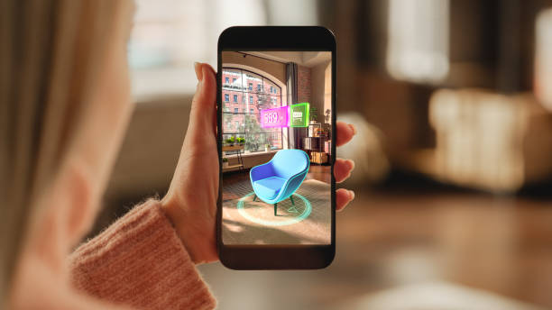

Exemple sur la réalité augmentée

Exemple sur la réalité virtuelle
La réalité virtuelle : immersion totale dans un monde numérique. La réalité virtuelle est une technologie qui permet aux utilisateurs de s’immerger complètement dans un environnement numérique. Les casques de réalité virtuelle, tels que l’Oculus Rift ou le HTC Vive, sont des dispositifs portables qui placent un écran devant les yeux de l’utilisateur. En utilisant des capteurs de mouvement et des contrôleurs, les utilisateurs peuvent interagir avec cet environnement virtuel et avoir l’impression d’être transportés dans un autre monde. L’un des principaux objectifs de la réalité virtuelle est de tromper les sens de l’utilisateur pour lui donner l’impression d’être réellement présent dans l’environnement numérique. Les expériences de réalité virtuelle peuvent varier, allant des jeux vidéo immersifs aux simulations éducatives en passant par des visites virtuelles de lieux historiques ou lointains. Tout cela dans un cadre ludique entre familles, amis ou encore collègues pour un team building. L’utilisation de jeux de réalité virtuelle (RV) fait également objet d’études pratiques dans la psychothérapie.
La réalité augmentée : superposition d’éléments numériques sur le monde réel. La réalité augmentée, quant à elle, consiste à superposer des éléments numériques sur le monde réel. Contrairement à la réalité virtuelle, l’AR ne remplace pas l’environnement qui nous entoure mais ajoute des couches d’informations ou d’interactions supplémentaires. Les appareils de réalité augmentée, tels que les smartphones, les tablettes ou les lunettes intelligentes comme les Microsoft HoloLens, utilisent des caméras et des capteurs pour analyser l’environnement réel et y superposer des éléments numériques en temps réel. Les applications de réalité augmentée sont nombreuses et variées. Elles incluent la navigation GPS avec des indications en surimpression sur le paysage, l’essai de meubles dans votre maison avant de les acheter ou encore les jeux mobiles qui intègrent des éléments virtuels dans votre environnement quotidien.
Exemple sur la réalité augmentée
Exemple sur la réalité virtuelle